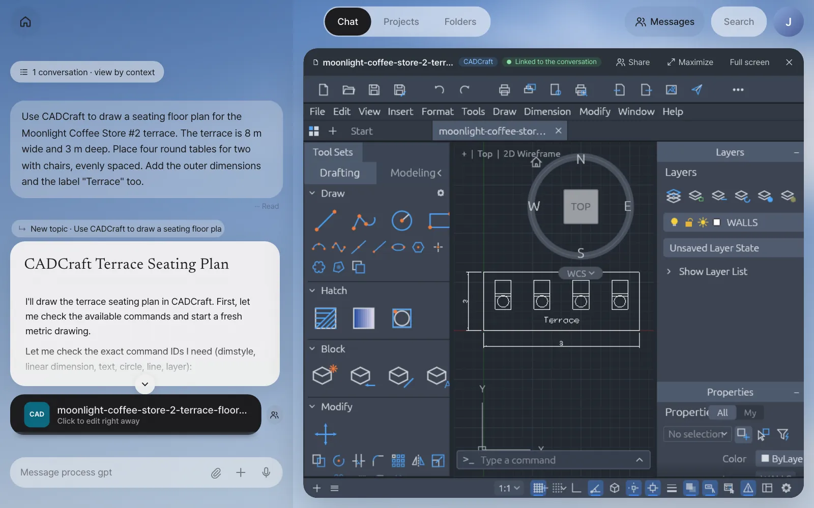
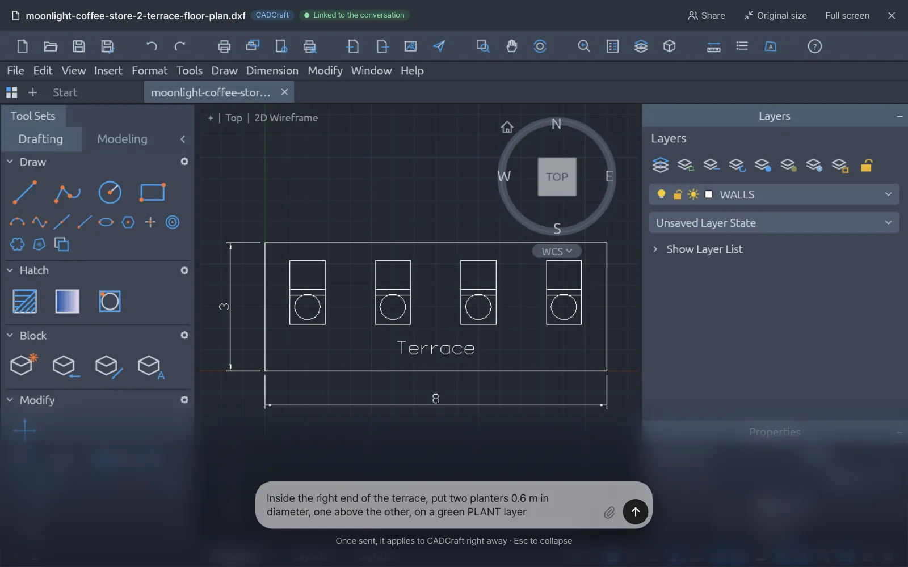
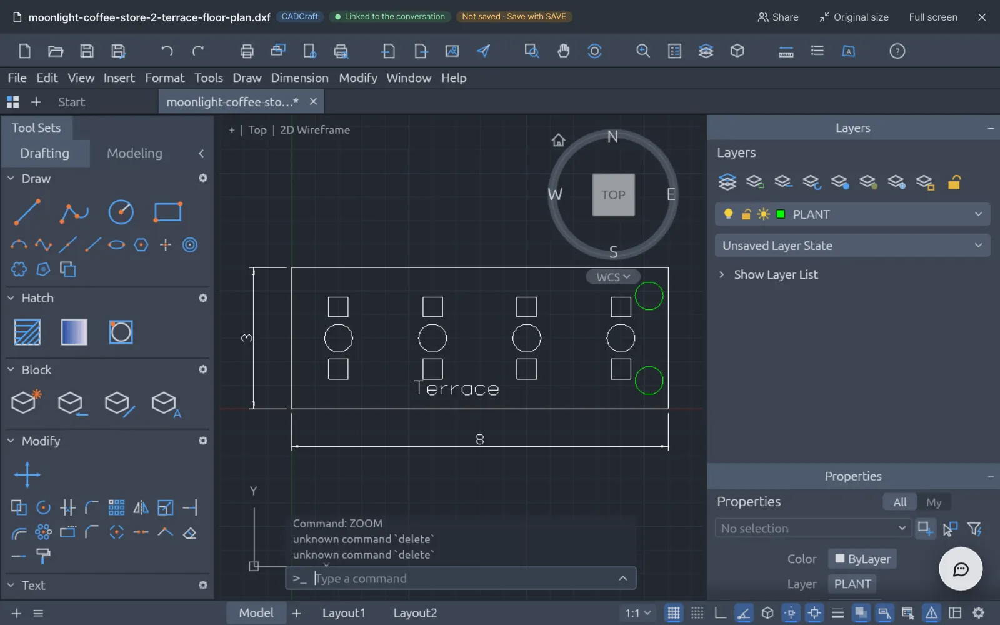
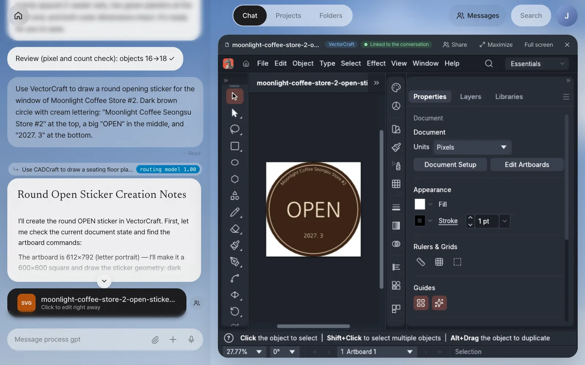
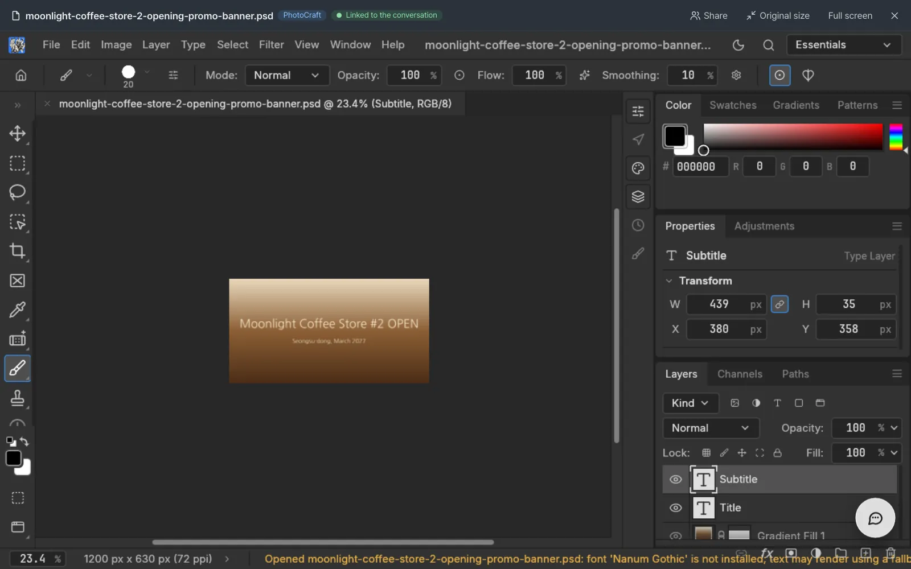
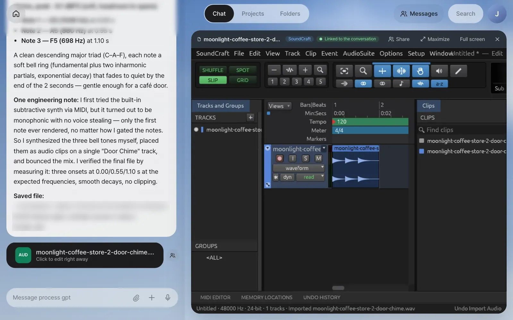
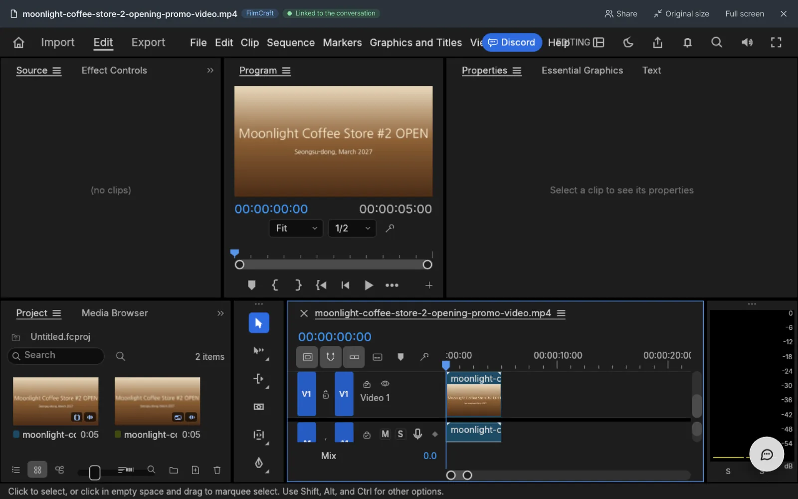

Besides documents, running a store takes drawings, stickers, promotional images, chimes and short videos. Lite opens five open-source ArtCraft apps (CADCraft, VectorCraft, PhotoCraft, SoundCraft and FilmCraft) next to the chat, just like IeumOffice, and lets the assistant make and edit things directly with each app's tools. You'll also try live co-editing, where you and the assistant work on an open app together through chat.
The five apps at a glance#
In Chapter 7, you kept a document open in the editor and changed it by talking. In this chapter, you handle drawings, pictures, sound and video the same way.
| App | What it handles | File | Card tile | Example in this chapter |
|---|---|---|---|---|
| CADCraft | 2D drawings | .dxf | CAD | Terrace seating layout for Store #2 |
| VectorCraft | Vector graphics like logos, stickers and banners | .svg | SVG | Opening sticker for the window |
| PhotoCraft | Layered images and photo retouching | .psd .png | IMG | Opening promo banner |
| SoundCraft | Sound and music editing | .wav | AUD | Door chime |
| FilmCraft | Video editing | .mp4 | VID | 5-second promo video |
Every app works the same way.
- In chat, name the app or what you want to make, and the assistant turns on that app's tools and makes the file. A file card is attached at the end of the answer.
- Click the card, and the app opens next to the chat with Linked to the conversation on.
- While it's open, requests you type in chat (or the maximized dial) are applied right on the open screen. When it's done, a short review note follows.
- When you save in the app, the edited copy is added and the card points to it.
Say clearly what to make
The assistant turns on an app's tools only when your message has a word like "floor plan, CAD, dxf, blueprint, layout drawing", "vector, logo, icon, banner, svg", "photo, image, picture, psd, thumbnail", "sound effect, chime, background music, wav", or "video, clip, mp4", together with a verb like "make, draw, create, edit, change, fix". This is because turning on too many tools at once confuses the assistant. Naming both the app and what to make, like "Use CADCraft to draw a floor plan…", is the surest way.
Try it 1 — a terrace layout in CADCraft#
CAD work is usually designer Minji Kim's job, but team lead Jinyoung Jang tries starting a drawing just by talking.
Use CADCraft to draw a seating floor plan for the Moonlight Coffee Store #2 terrace. The terrace is 8 m wide and 3 m deep. Place four round tables for two with chairs, evenly spaced. Add the outer dimensions and the label "Terrace" too.
In our run it took about 3 and a half minutes. The assistant set a dimension style that suits a drawing in meters, made layers (WALLS, FURNITURE, TEXT, DIMENSIONS), and placed the tables and chairs. Then it rendered the drawing to look at it, found on its own that the "Terrace" label overlapped the middle two tables, moved it down into the free strip, and saved it.

Check: A moonlight-coffee-store-2-terrace-floor-plan.dxf CAD card, and CADCraft and Linked to the conversation in the app header. The answer sums up the drawing's contents by layer, the dimensions and the save path.
Try it 2 — live co-editing: add planters from the dial#
Edit the drawing while viewing it large. Click Maximize, and the chat folds into the dial at the bottom right. Click the dial and type:
Inside the right end of the terrace, put two planters 0.6 m in diameter, one above the other, on a green PLANT layer

The assistant first checks the open drawing ("I'll verify the current drawing state first, then add the planters"), then draws a PLANT layer and two planters on the same screen. It doesn't make a new file. The very drawing the person is looking at changes. In our run, while checking, it also found that the eight chairs had been drawn twice the intended size and overlapped the tables, so it redrew them and nudged the "Terrace" label. A review note follows.
Review (pixel and count check): objects 16→18 ✓

Changes the assistant makes also stay in the file only when a person saves them. Click the app's save button (SAVE in CADCraft), and the edited copy is added and the card points to it.
Areas are written in m²
Area labels in a drawing are written in m², like "12m²". Even if your request uses the ㎡ symbol, it goes into the drawing as m², so the text doesn't break into □ on the CADCraft screen.
Try it 3 — an opening sticker in VectorCraft#
Use VectorCraft to draw a round opening sticker for the window of Moonlight Coffee Store #2. Dark brown circle with cream lettering: "Moonlight Coffee Seongsu Store #2" at the top, a big "OPEN" in the middle, and "2027. 3" at the bottom.
In our run, an SVG card (moonlight-coffee-store-2-open-sticker.svg) arrived about 8 minutes later: the assistant widened the arc twice until the whole store name, including "#2", fit along the top, and checked the render at each stage. The lettering uses NanumGothic, a font the web editor also has, so the text doesn't break when you open it and you can edit it as text.

Try it 4 — a promo banner in PhotoCraft#
Use PhotoCraft to make a 1200×630 opening promo banner image. Use a wood-tone gradient background from brown to beige, big cream text "Moonlight Coffee Store #2 OPEN" in the middle, and smaller text "Seongsu-dong, March 2027" below it.
PhotoCraft saves the result as a PSD with its layers intact. In our run (about 9 minutes), the PSD kept the gradient (Gradient Fill 1), Title and Subtitle as separate layers above the background, so it's easy to change just the text later. After rendering a preview, the assistant also shrank the title from 78 pt to 70 pt because it nearly touched the edges.

You'll take a picture out of a Word document, edit it in PhotoCraft and put it back in place in Chapter 9.
Try it 5 — a door chime in SoundCraft#
Use SoundCraft to make a soft chime of about 2 seconds that plays when the store door opens. Have it ring three times, from a high note to a low note.
In our run, a moonlight-coffee-store-2-door-chime.wav (2.0 seconds) card arrived about 11 minutes later. The assistant explained that SoundCraft's built-in synth played only one note at a time, so it synthesized three soft bell tones itself (C6 → A5 → F5, at 0.00, 0.55 and 1.10 seconds), placed them as clips on one track in a SoundCraft session, mixed it down, and measured the result to check the pitches and timing.

Try it 6 — a 5-second promo video in FilmCraft#
Make a short video from the banner you made in PhotoCraft (ask in the same conversation).
Use FilmCraft to make a 5-second landscape promo video from the opening promo banner image you just made. Add a slow zoom-in, and have the last second fade out to black.
Video took about 7 and a half minutes in our run. The assistant exported the banner as a PNG from PhotoCraft, built the video in FilmCraft, checked frames at 0, 2.5, 4.5 and 4.98 seconds, and summed up the finished video like this (shortened).
moonlight-coffee-store-2-opening-promo-video.mp4
- Specs: 1920×1080, 23.976 fps, H.264, 5 seconds (120 frames)
- Slow zoom-in: a gentle push-in over the full 5 seconds (scale 171% → 180%)
- Fade out to black: opacity 100% → 0% from 4.0 s to 5.0 s

Check: A VID card …opening-promo-video.mp4 (the banner PNG it used is attached too). The program screen length in FilmCraft is 00:00:05:00.
When a long job is cut off
In the current version, a long job like video can be cut off partway by a server error. The files the assistant was making are still there, so if you send the same request again, it checks the remaining files and picks up where it left off instead of starting over.
When an app isn't installed#
ArtCraft apps are an optional part you choose at install. In an install without an app, the rest of Lite works as usual, and only that app's cards can't be opened (for example, a mail draft skips the floor plan and makes only the proposal and quote).
Each app needs two things: the web editor that opens next to the chat (built with a Korean font so Korean text doesn't break into □), and the command-line tool the assistant uses to make and edit files. With a Docker install, add them with ./install.sh --with-craft (Chapter 1). It pulls an image with the five apps already built (ghcr.io/uengine-oss/process-gpt-lite-craft). To build them from source instead, put LITE_CRAFT_IMAGE= (empty) in .env (about 50 minutes the first time, 12GB or more of Docker memory). For a development install, follow artcraft/README.md in the repository.
Next#
So far you've made and edited documents (Chapter 7) and drawings, pictures, sound and video (this chapter) one at a time. In the next chapter, when a single customer email arrives, the assistant makes a floor plan, a design proposal and a quote all at once. Then you take the floor plan picture in the proposal out to PhotoCraft, edit it and put it back in place (Chapter 9).
Watch the video
CADCraft · VectorCraft · PhotoCraft · SoundCraft · FilmCraft · Live co-editing
Check your understanding
- You said "Add a parasol to the terrace drawing too," and the assistant made a new drawing file. What should have been different for the open drawing to change right away?
- You only said "Brighten this photo up a bit," and got just an answer, without the PhotoCraft tools. How should you rephrase it?
- You added planters from the dial, closed the app and opened it again, and the planters are gone. Why?
Answer
- You need to open the drawing card and ask while Linked to the conversation is on. When the app is open, the assistant reads the open screen first and edits it right there.
- Attach the photo and include the app name or "image/photo … retouch" with a verb, like
Use PhotoCraft to retouch this photo and make it brighter. That's what turns on the PhotoCraft tools. - Because you didn't save. Changes the assistant makes stay only on the open screen until you save. When you see Not saved · Save with SAVE, save in the app to keep the edited copy.